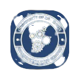

UC Davis Offcial Resources and Programs
Description:
This is a Discord server run by the department of Recreation that is used to host friendly tournaments for popular video games and giveaways!
Description:
The Aggie Reuse Store is a student-run thrift store that promotes sustainability and reduces waste. We divert materials from the landfill by redistributing donated items to the community at low cost, and upcycling materials that would otherwise have been thrown out. Check out our website to learn more. If you're passionate about shopping small and shopping secondhand, and want to get involved volunteering at ARS, check out the team vacancy posts on our Instagram at https://www.instagram.com/aggiereusestore/ ! If you just want to shop, follow us and we'll keep you updated on our plans for reopening this fall quarter.🌱
Description:
The Office of Health Professions Advising serves all UC Davis undergraduates, graduate students, and alumni pursuing any health profession or allied health field. Our goal is for students to become successful applicants who demonstrate compassion, leadership, teamwork, and a commitment to academic success throughout their journey toward a health professions career.

Description:
This is run by the Student Startup Center
Description:
FREE GROCERIES AVAILABLE ON-CAMPUS Up to 40 food items, menstrual products, and toiletry items available per order; fresh fruits, veggies, bread/bakery items also available every Monday. Open to all UC students. Bring your student ID card, wear a mask, and get tested weekly for COVID-19. If you or anyone you know is in need of support, please reach out to us and explore the on-campus and off-campus resources and services found in our Basic Needs Living Doc: https://tinyurl.com/ucdbnld